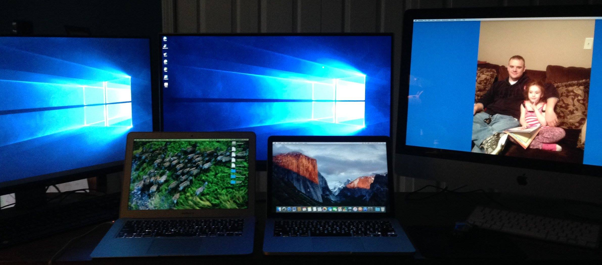

James Sides
I recently decided to build my own PC after years of over spending on prebuilt machines filled with low to mid quality components. The process was far easier than I anticipated thanks to PcPartsPicker.com. This site essentially allowed me to build my entire computer virtually before I ever ordered my first part. This removed much of the fear and anxiety associated with the risk of choosing parts that were not compatible with each other.
After receiving all of my parts the build itself was pretty straight forward, taking approximately 6 hours from start to finish. Most of that time was spent researching the proper build techniques and triple checking I was not making any mistakes. If I had to do it again I could do it in under an hour without breaking a sweat.
My one regret with the build is that I did not order the parts I really wanted the first time around. I settled for a GTX 1060 graphics card in an attempt to save money but ultimately ended up ordering a GTX 1080 card (seen below).
As a result I now have a GTX 1060 sitting on my desk with no use for it. (I'll be listing it for sale on eBay so try to recoup some of the cash I paid for it)
Still, overall I am happy with the finished product including the multiple monitor set up I went with. Here's a pic of what my crazy desk looks like now...(recently shared this on Facebook®)
